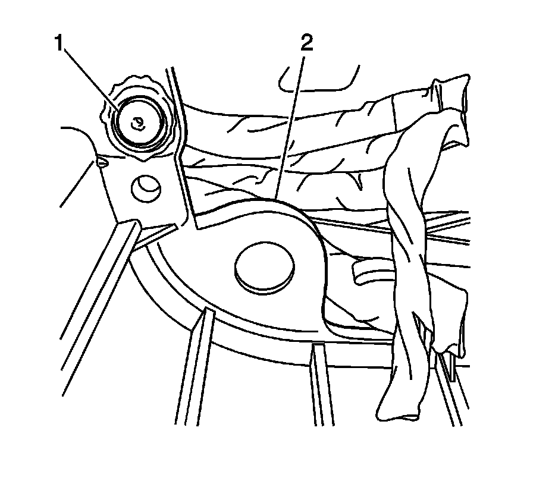
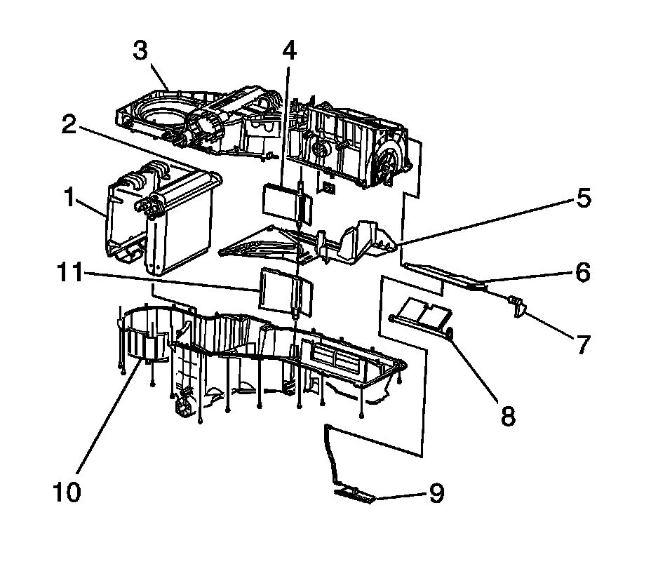

Air Temperature Door Replacement - Right Side
AIR TEMPERATURE DOOR REPLACEMENT - RIGHT SIDE
REMOVAL PROCEDURE

1. Remove the HVAC module.
2. If equipped remove the heat stakes (1) from the HVAC module (2) with a screwdriver and a hammer.

3. If equipped remove the HVAC module assembly screws.
4. Remove the upper HVAC module case (1) from the lower HVAC module case (2).
5. Remove the right temperature door (4) from the upper HVAC module case (3).
INSTALLATION PROCEDURE
1. Install the right temperature door (4) to the upper HVAC module case (3).
2. Install the upper HVAC module case (1) to the lower HVAC module case (2).
3. NOTE: Refer to Fastener Notice.
IMPORTANT: For every heat stake removed ensure that you install a screw.
Install the screws to the HVAC module assembly.
Tighten the screws to 1.6 N.m (14 lb in).
4. Install the HVAC module.